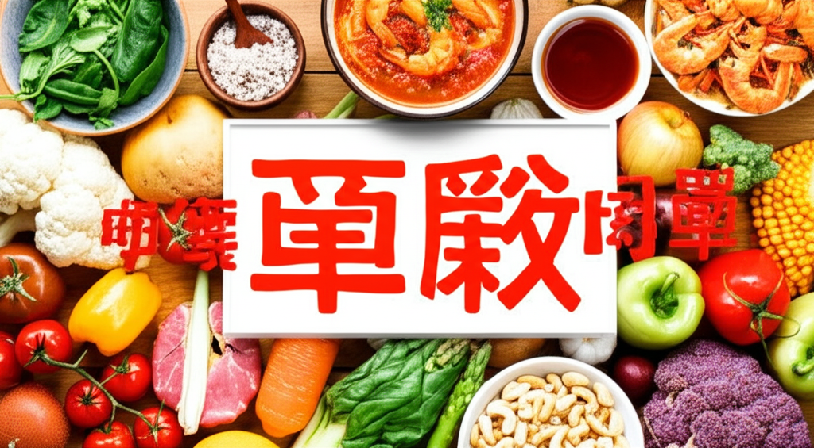

引言： 近期健康新聞聚焦在高血壓、飲食習慣、腎臟疾病的預防與治療，以及減重手術的選擇。從飲食中鈉的攝取量控制、鎂的重要性，到慢性腎臟病與心血管疾病的關聯，以及新興減重手術的評估，都提供了重要的健康資訊。
多篇新聞都提到飲食與高血壓的關係。營養師高敏敏指出，過多的鈉攝取是導致高血壓的原因之一，提醒民眾每日鈉總攝取量不宜超過2400mg。另外，也有新聞提到，即使減少油鹽攝取，仍然高血壓纏身，可能是因為忽略了鎂的攝取。營養師薛曉晶指出，鎂能抑制鈣離子進入血管平滑肌細胞，減少血管收縮反應，有助於控制血壓。此外，枇杷也具有控制血壓的功效。這些資訊提醒我們，飲食控制不僅僅是少油少鹽，更要注重營養均衡，特別是鎂的攝取。
新聞指出，台灣罹患慢性腎臟疾病的患者比例相當高，且許多患者在65歲以前因心血管疾病死亡。因此，慢性腎臟病人的血壓、血糖、血脂都要嚴格控制。健保擴大給付SGLT2抑制劑，有助於減少洗腎與心血管疾病風險。這凸顯了腎臟疾病預防的重要性，及早控制相關風險因素，能有效降低疾病惡化與併發症的發生。
報導中提到，除了傳統的飲食控制和運動，新興的減重手術也成為一種選擇。目前台灣與世界上較常執行的減重手術有胃袖狀切除等。 然而，並非所有人都適合減重手術，需要經過醫師評估。一位台中男子因未控制三高，導致腳底板皮全掉，險些截肢，也提醒我們，維持健康生活方式的重要性，即使進行減重手術，仍需配合飲食和運動，才能達到最佳效果。
總結來說，近期健康新聞主要強調了飲食、高血壓、腎臟疾病和減重手術之間的關聯。透過控制飲食中的鈉含量、增加鎂的攝取，以及及早控制血壓、血糖、血脂，可以有效預防慢性疾病。此外，在選擇減重手術前，務必諮詢專業醫師，並配合健康的生活方式，才能達到理想的健康狀態。